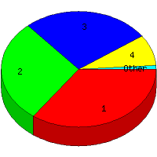

Week of 10/25/2009 to 10/31/2009: Top
5 of
5 File Types (Extensions)
Sorted by Access Count
Individual file types as determined by file extensions. All URLs that
do not contain an extension are counted as directories.

| Rank |
Type |
Accesses |
% |
Bytes |
% |
| 1 |
htm
|
33 |
35.11 |
127,409 |
11.72 |
| 2 |
Directory (folder)
|
27 |
28.72 |
70,875 |
6.52 |
| 3 |
jpg
|
25 |
26.60 |
761,737 |
70.07 |
| 4 |
gif
|
8 |
8.51 |
126,784 |
11.66 |
| 5 |
css
|
1 |
1.06 |
260 |
0.02 |